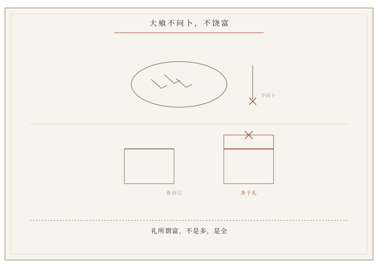

曲礼下 · 二·七十八 · 第 201 课
大飨不问卜，不饶富。注「祭五帝于明堂，莫适卜也」「富之言备也，备而已，勿多于礼也」。
说什么事：一祭不卜，一礼不丰。
落在哪一层：礼，兼及礼意。论盛礼之节制。
为何编在此位：上节论言，此节论礼之极盛处如何守节。篇章将尽，收于「勿过礼」。
【经】大饗不問卜，不饒富。
【注】祭五帝於明堂，莫適卜也。《郊特牲》曰：「郊血，大饗腥。」富之言備也，備而已，勿多於禮也。
【疏】此大飨总祭五帝，其神非一，若卜其牲日，五帝总卜而已，不得每帝问卜；若其一一问卜，神有多种，恐吉凶不同，故郑云「莫适卜」，一卜而已。「不饶富」者，富之言备也，虽曰大飨诸帝，配以文武，然礼数有常，取备而已，不得以其大飨，丰饶其物，使之过礼。此经直云「大飨」，郑知「祭五帝于明堂」者，以其上文云「不问卜」，又与《月令》季秋大飨帝同，诸帝皆在，不得每帝问卜；若其祫之大飨，则《周礼·宗伯》享大鬼皆卜，不得云不问卜，知非大祫也。郑引《郊特牲》云「郊血，大飨腥」者，取「大飨」二字以证此「大飨」之文。然此祭五帝莫适卜，而雩总祭五帝得每帝问卜者，以雩祭为百谷祈雨，非一帝之功，故每帝适卜；至于大飨之时，岁功总毕，配以文武，祭报其功，不须每帝皆卜，故惟一卜而已。
大飨 总祭五帝于明堂，以文王、武王配。
莫适卜 适，专主。无所专主，故一卜而已。
饶富 饶，益之使多。富，注「备也」。
备 礼数之全，非物之厚。
大飨不逐位问卜，也不把礼物加厚到超过礼数。
两句十个字，讲盛礼之节：神多而不逐卜，礼大而不加厚。越到最盛处，礼越要收。「备而已，勿多于礼也」——注把这层意思说得最干脆。
第一层 莫适卜 五帝同祭，若每帝一卜，恐吉凶互异，礼便无从行。疏断「一卜而已」。众神并临之时，礼的选择是统而不分。
第二层 富即是备 注「富之言备也」。此训极要：礼所谓富，不是多，是全。数目够了即富，再多即过。
第三层 勿多于礼 「不饶富」的正面表述。不是不许丰，是不许「多于礼」。盛的界限，仍由礼数来定。
第四层 雩与大飨之别 疏辨：雩为百谷祈雨，非一帝之功，故每帝适卜；大飨岁功总毕，报其功而已，故一卜。同一「总祭五帝」，卜法不同，看的是所求为何。
与今日何干 预算越大的项目，越容易在「加一点」上失守。礼的提醒是：够即止，多则过。
| 左 | 右 |
|---|---|
| 大飨不问卜 | 五帝总卜，一卜而已 |
| 莫适卜 | 神多，恐吉凶不同 |
| 不饶富 | 富之言备也 |
| 备而已 | 勿多于礼 |
| 雩则每帝适卜 | 所求者百谷，非一帝之功 |
| 大飨岁功总毕 | 报功而已 |
画上下两段。上段：一枚横置的椭圆（示卜甲），甲面画三道短裂纹；甲之右侧画一道竖线并在其末端打叉（示「不问卜」）。下段：两只等高的方斗并排，左斗满至斗口、右斗高出斗口一截且其超出部分被打叉（示「备而已，勿多于礼」）。两段之间以一条浅色横线相隔。不写文字、不画人。赭色只用在右斗高出斗口的那一截。
